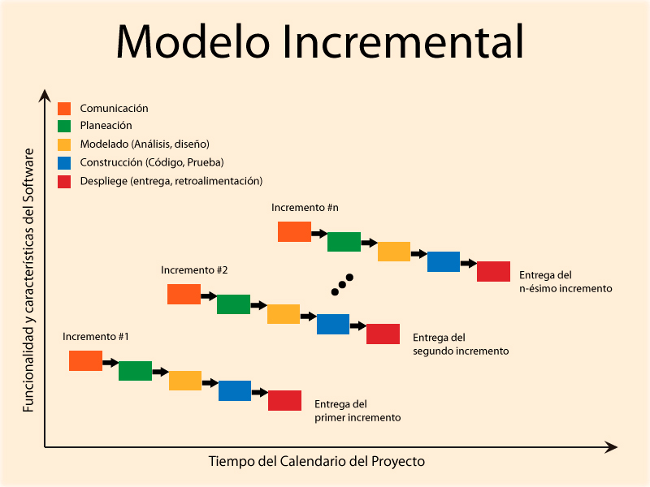
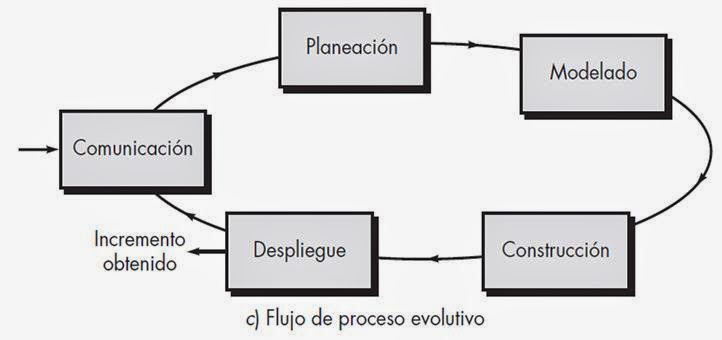
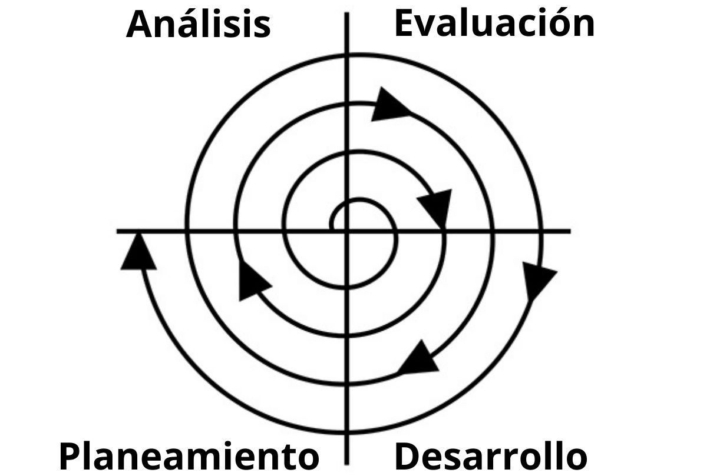
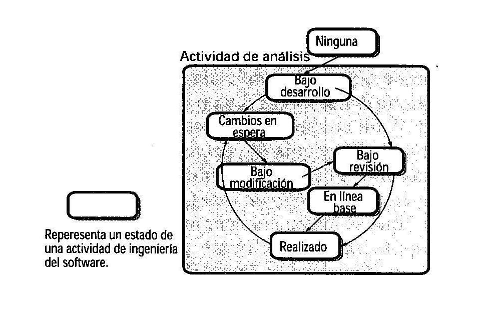
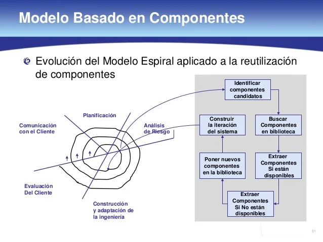
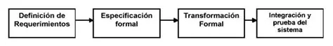
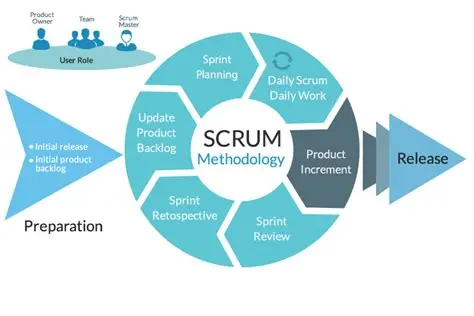
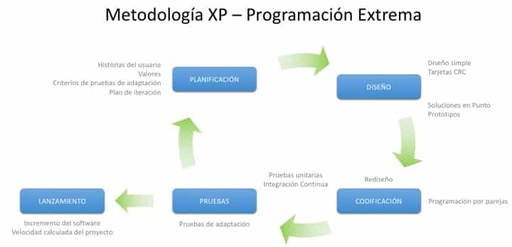
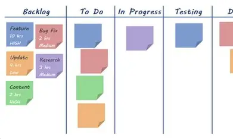

Modelos de Desarrollo de Software
Modelos Prescriptivos
Modelo en Cascada
Es el modelo de proceso de software más antiguo y ampliamente usado. Propone un enfoque sistemático y secuencial que fluye hacia abajo como una cascada a través de fases como comunicación, planeación, modelado, construcción y despliegue.
Ventajas
- Fácil de entender y gestionar
- Documentación clara en cada fase
- Ideal para proyectos con requisitos fijos
Desventajas
- Poca flexibilidad ante cambios
- El cliente solo ve el producto al final
- Los errores se detectan tarde
Diagrama

Video explicativo
Descripción en voz
Proceso Incremental
Combina elementos del modelo en cascada aplicados repetidamente. En cada incremento se entrega un producto operacional al cliente, permitiendo retroalimentación temprana y continua entre entregas funcionales.
Ventajas
- Entregas funcionales tempranas
- Menor riesgo de fracaso total
- Adaptable a cambios de requisitos
Desventajas
- Requiere planificación cuidadosa
- Puede generar dependencias complejas
- Difícil de integrar sistemas grandes
Diagrama

Video explicativo
Descripción en voz
Proceso Evolutivo
Desarrolla una versión inicial y la refina mediante múltiples iteraciones basadas en la retroalimentación del usuario. El software evoluciona con el tiempo, adaptándose a requisitos que cambian o no estaban completamente definidos al inicio.
Ventajas
- Responde bien a cambios
- El cliente participa activamente
- Reduce el riesgo de requisitos mal entendidos
Desventajas
- Difícil de estimar tiempos y costos
- Riesgo de sistemas mal estructurados
- Riesgo de cambios infinitos
Diagrama

Video explicativo
Descripción en voz
Modelo Espiral
Propuesto por Barry Boehm, combina la naturaleza iterativa de los prototipos con los aspectos sistemáticos del modelo en cascada. Cada vuelta de la espiral representa una fase, incorporando un análisis de riesgo en cada iteración.
Ventajas
- Gestión explícita de riesgos
- Flexible ante cambios
- Adecuado para proyectos grandes
Desventajas
- Requiere experiencia en gestión de riesgos
- Puede ser costoso y lento
- Complejo de gestionar
Diagrama

Video explicativo
Descripción en voz
Modelo Concurrente
Permite representar elementos concurrentes de cualquier modelo del proceso. Define actividades del proceso de ingeniería usando estados que ocurren simultáneamente, adecuado para proyectos con equipos que trabajan en paralelo.
Ventajas
- Permite trabajo en paralelo
- Refleja la realidad del trabajo en equipo
- Reduce tiempos de desarrollo
Desventajas
- Difícil de coordinar equipos
- Requiere herramientas especializadas
- Mayor complejidad de seguimiento
Diagrama

Video explicativo
Descripción en voz
Modelos Especializados
Basado en Componentes
Se enfoca en el diseño y construcción de sistemas a partir de componentes de software reutilizables. Incorpora muchas características del modelo espiral y es iterativo por naturaleza, promoviendo la reutilización sistémica.
Ventajas
- Alta reutilización de código
- Reduce tiempo de desarrollo
- Mayor fiabilidad del sistema
Desventajas
- Dependencia de componentes de terceros
- Posibles incompatibilidades
- El sistema puede ceder el control del diseño
Diagrama

Video explicativo
Descripción en voz
Métodos Formales
Abarca actividades que conducen a la especificación matemática del software. Permiten verificar requisitos de forma rigurosa usando lógica formal, siendo particularmente útil en sistemas críticos donde los errores son inaceptables.
Ventajas
- Máxima precisión y rigor
- Detecta ambigüedades en requisitos
- Ideal para sistemas críticos
Desventajas
- Muy costoso y lento
- Requiere conocimiento matemático avanzado
- Difícil de aplicar a gran escala
Diagrama

Video explicativo
Descripción en voz
Orientado a Aspectos
Define, especifica, diseña y construye "aspectos" — mecanismos que permiten definir las funciones de un sistema que se propagan a través de múltiples clases o módulos, como la seguridad, el logging o la gestión de errores.
Ventajas
- Mejor separación de responsabilidades
- Código más limpio y mantenible
- Reduce la duplicación transversal
Desventajas
- Curva de aprendizaje alta
- Difícil de depurar
- Herramientas de soporte limitadas
Diagrama
Video explicativo
Descripción en voz
Proceso Unificado
Proceso Unificado (UP)
El Proceso Unificado es un marco de desarrollo iterativo e incremental que organiza el trabajo en cuatro fases: Inicio, Elaboración, Construcción y Transición. Está basado en casos de uso, es centrado en la arquitectura y dirigido por riesgos. Su versión más conocida es el Rational Unified Process (RUP).
Ventajas
- Iterativo e incremental
- Fuerte énfasis en arquitectura
- Gestión de riesgos integrada
- Escalable a proyectos grandes
Desventajas
- Complejo de implementar correctamente
- Documentación extensa
- Puede resultar pesado para equipos pequeños
- Requiere capacitación especializada
Diagrama

Video explicativo
Descripción en voz
Modelos Ágiles
Scrum
Marco ágil que organiza el trabajo en sprints de 2 a 4 semanas. Define roles claros (Product Owner, Scrum Master, equipo de desarrollo) y ceremonias periódicas como la revisión y retrospectiva, promoviendo la transparencia y la mejora continua.
Ventajas
- Entregas rápidas y frecuentes
- Alta transparencia y visibilidad
- Fomenta la colaboración del equipo
Desventajas
- Difícil de escalar sin adaptaciones
- Requiere compromiso total del equipo
- Alcance puede crecer sin control
Diagrama

Video explicativo
Descripción en voz
Extreme Programming (XP)
Metodología ágil centrada en mejorar la calidad del software y la capacidad de respuesta a cambios. Promueve prácticas como programación en pares, desarrollo guiado por pruebas (TDD), integración continua y refactorización constante.
Ventajas
- Alta calidad del código
- Detección temprana de errores (TDD)
- Gran adaptabilidad a cambios
Desventajas
- Requiere mucha disciplina técnica
- Cliente debe estar muy involucrado
- Difícil de aplicar en equipos grandes
Diagrama

Video explicativo
Descripción en voz
Kanban
Sistema de gestión del flujo de trabajo que visualiza las tareas en un tablero con columnas (Por hacer, En progreso, Terminado). Limita el trabajo en curso (WIP) para maximizar la eficiencia y minimizar los cuellos de botella en el proceso.
Ventajas
- Visualización clara del flujo
- Muy flexible, sin iteraciones fijas
- Fácil de adoptar gradualmente
Desventajas
- Poca estructura para proyectos complejos
- Sin roles ni ceremonias definidas
- Puede perder el enfoque sin límites WIP
Diagrama

Video explicativo
Descripción en voz